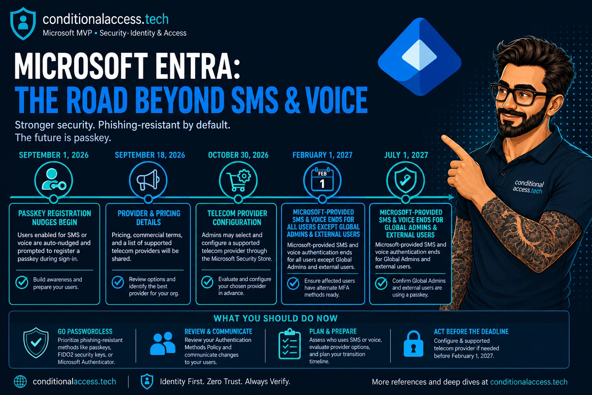

Authentication Methods · SMS and Voice Retirement · Part 1
What changed on September 1, what breaks on February 1, 2027, and how MSPs find every SMS and Voice user before the passkey prompt stops being skippable.
Entra ID · Passkeys · MSP · · · Jon Hope · Microsoft MVP · Security: Identity & Access
Originally published at conditionalaccess.tech
Section 01
Source: Passkeys by default and retirement of Microsoft-provided SMS and voice · SMS and voice retirement FAQ · MC1426371 (Message Center)
I've been on more calls than I can count over the past few weeks, and the same question keeps coming up: what is actually happening with SMS and Voice in Entra? There's a misconception doing the rounds, so let me add some context.
Microsoft is retiring Microsoft-provided telephony delivery for SMS and Voice. The methods themselves stay in Entra ID. If you have a business, regulatory, or technical reason to keep SMS and Voice after the retirement date, you can. You configure a telephony provider through Microsoft Security Store and pay that provider for the messages and calls.
Microsoft still enforces the policy. Someone else sends the text, and you get the invoice.
Most of the confusion I hear comes from people collapsing this into one date. There are five, all from Microsoft's Message Center post MC1426371, and the yellow marker shows where we are today.

Click to open full size. The marker moves with today's date.
⚠️ Two details the graphic can't fit: The blocking prompt only hits users whose only MFA method is SMS or Voice. And "external users" in the July 1 group doesn't include internal guests. They stay on February 1.
⚠️ Public cloud only: This timeline applies to public cloud tenants. Microsoft says other cloud environments follow on a later schedule. Azure AD B2C is out of scope, and Entra External ID gets its own announcement.
Section 02
Source: Choose a telephony provider for SMS and voice · Telephony providers FAQ · Costs and routing function
Microsoft calls it Choose Your Own Telephony Provider. You pick a provider in Security Store, sign their agreement, configure them for Entra ID, and monitor the service. Entra keeps enforcing your authentication methods policy and runs the sign-in experience. The provider delivers the SMS or places the call. Private preview
Microsoft positions this for user segments with a documented requirement, and asks you to confirm a phishing-resistant method can't meet it first. For most MSP customers, that's a short list: a shared-device frontline team, a regulated workflow that mandates an out-of-band SMS. Everyone else should land on passkeys, which cost nothing extra.
ℹ️ MSP angle: Setup includes deploying a routing function in an Azure subscription that connects Entra ID to the provider, and it carries standard Azure consumption charges on top of what the provider bills. Microsoft expects those Azure costs to be minimal next to the telephony charges, but somebody still has to own the resource. For every customer that needs SMS, decide who owns the provider contract and whose Azure subscription hosts that function before October 30, not after.
Section 03
Source: Move users to passkeys · Enable passkeys (FIDO2) · Plan a passkey deployment
Unless a tenant opted out beforehand, its SMS and Voice users were auto-enabled for passkeys on September 1 and put into a passkey profile that allows all passkey types. The Registration Campaign was set to Microsoft Managed, targeting passkeys. The next time those users complete MFA, they see a prompt to register a passkey. By default they can snooze it forever.
Unlimited snoozes sound harmless. They aren't, because users who snooze until February 1 hit the same prompt with the snooze button gone. Confused end users become angry end users fast, and the helpdesk ticket lands on you.
Run these against every customer tenant:
Section 04
Source: Temporarily opt out of automatic passkey enablement · Roy Klooster: The setting you won't find in the portal
What you do next depends on where you are with your passkey rollout. If you haven't enabled FIDO2 properly or haven't identified your SMS and Voice users, pause the automatic enablement first. Get sorted, then turn the nudge back on when you're ready for the questions.
Inforcer's own Roy Klooster was one of the first people I know to write about this. The man lives in Graph, and he was quick to surface the property Microsoft uses. There's no portal toggle. It's a Graph PATCH against the authentication methods policy, and it needs Policy.ReadWrite.AuthenticationMethod.
PATCH https://graph.microsoft.com/beta/policies/authenticationmethodspolicy
Content-Type: application/json
{
"optOutSettings": {
"passkeyDynamicMigration": true
}
}⚠️ Read before you run it: This is a beta endpoint. The opt-out is temporary and covers the September 1, 2026 to February 1, 2027 changes only. On February 1 the standard timeline applies regardless of this setting. It buys you time. It doesn't move the deadline.
🛑 Verify in each tenant: Microsoft documents the opt-out as excluding the tenant from automatic passkey enablement and the Registration Campaign rollout. The docs don't say whether applying it after September 1 reverts a passkey profile or campaign state that was already changed. After you PATCH, check the passkey policy and Registration Campaign in the portal and correct them by hand if needed.
Section 05
Source: Find users enabled for SMS or Voice · entra-sms-voice-usage-analyzer · CA report-only mode · Troubleshoot authentication strengths
This is where most of the questions are sitting right now. There are three ways in. I use all of them, because each one catches people the others miss.
Microsoft publishes a PowerShell script for this. It needs Global Reader, Authentication Policy Administrator, or Security Reader. Microsoft's own guidance is blunt: any non-zero result means the tenant is in scope.
Daniel Bradley's free, interactive Entra Authentication Methods report is a great place to start.
There's also a native approach that works well for catching the people who are actually signing in with SMS and Voice. Big shoutout to Nathan McNulty for the idea.
1
Build a custom authentication strength with SMS and VoiceThis is how you detect it. Include only the SMS and Voice combinations and leave out every other MFA method, so any successful sign-in against this strength is a signal SMS or Voice is still in use.
2
Create a CA policy in report-onlyAll users (exclude break-glass), all resources, grant with Require authentication strength set to the strength from step 1.
3
Let it collect sign-insReport-only evaluates on every sign-in and enforces nothing, so users see no change.
4
Read the resultsUse the policy impact view or the Report-only tab in the sign-in logs. The Authentication Details tab shows the method used, so you can confirm the SMS and Voice sign-ins.
When you're ready to enforce, the same policy moves from report-only to on. You've already done the testing. I walk through all of this in the video in section 07.
Section 06
Source: Jan Bakker: A guide to stay calm · Threatscape prep content · Kenneth van Surksum deep dive
I didn't figure all of this out alone. These are the resources I've gone back to most while working through it.
The definitive guide
My go-to throughout this whole process. I appreciate the calm, steady approach he takes to the entire timeline.
For video people
Solid prep content covering what you need to know, if you'd rather watch than read.
The technical deep dive
An in-depth look at the entire situation. Grab a coffee before you start. It's thorough.
Section 07
Source: conditionalaccess.tech on YouTube · Plan a passkey deployment
If you're OK listening to me ramble a bit, I walk through the passkey rollout end to end: finding the users, the Authentication Strength approach, and what the experience looks like from the user's side.
Video not loading? Watch it on YouTube.
Closing
Source: After retirement · Are customers going to get locked out? · MC1426371 (Message Center)
Nobody gets locked out on February 1. Microsoft is clear on that. What happens instead is quieter and, for an MSP, more expensive: every user still relying on Microsoft-provided SMS or Voice gets a passkey registration prompt they can't skip, on whatever device they happen to be holding, on a Monday morning. There's no opt out for that behavior.
The telephony provider option doesn't open until October 30, and it's still in private preview. Microsoft's Message Center post recommends finishing setup at least 4 weeks before February 1, which puts the real target at January 4, 2027. That's about nine weeks after configuration opens, with the holidays in the middle, to pick a provider, sign a contract, and migrate the users who need one. If you're waiting to see what the preview looks like before deciding, you've already used a chunk of that window.
Part 2 picks up from here: what went wrong after September 1, and what SMS costs now.